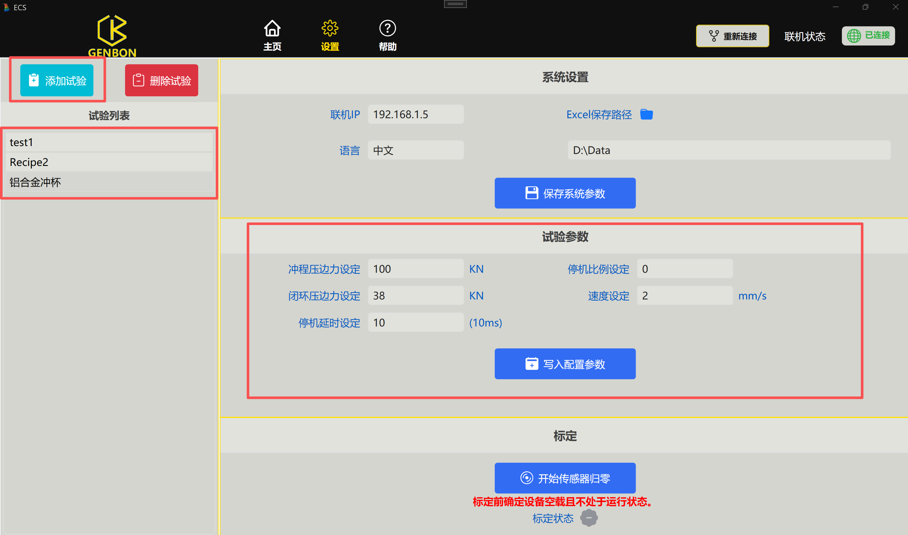
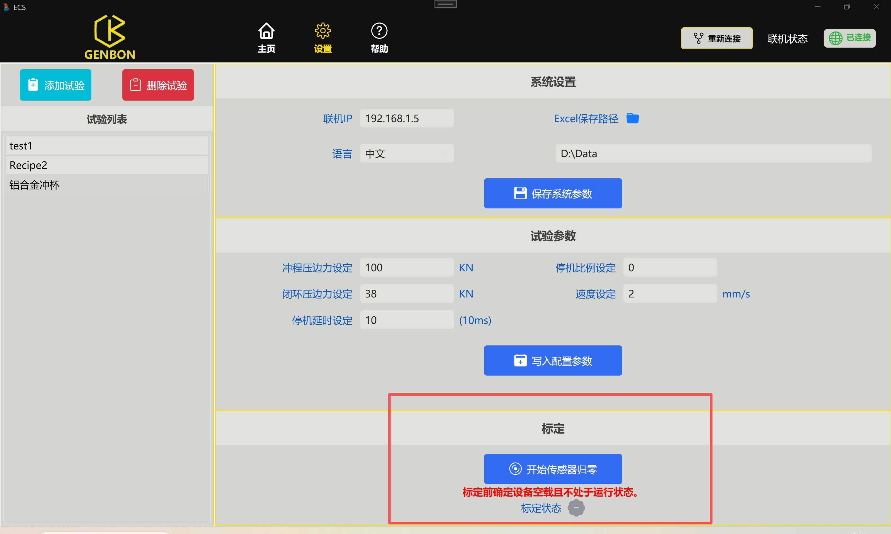
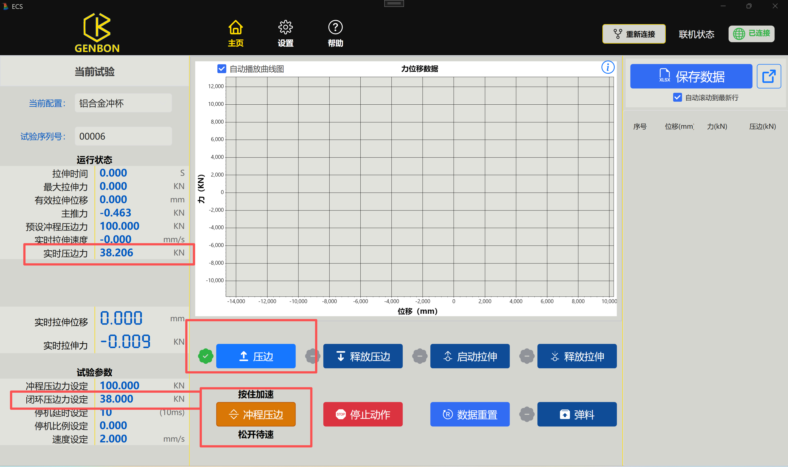
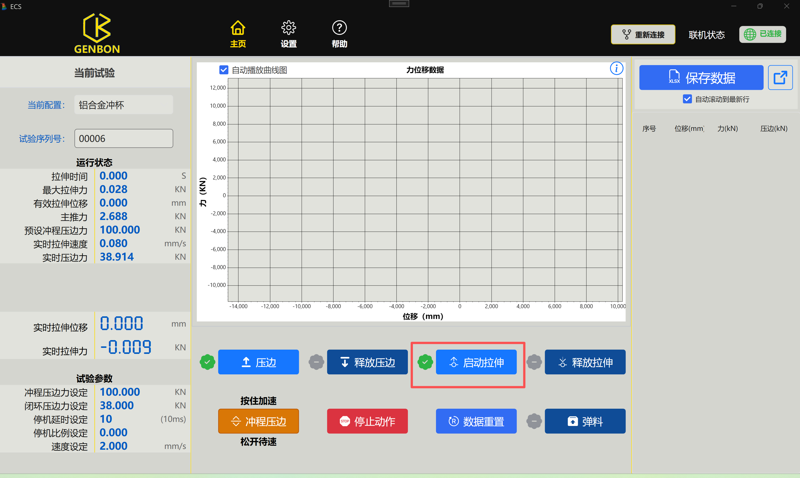
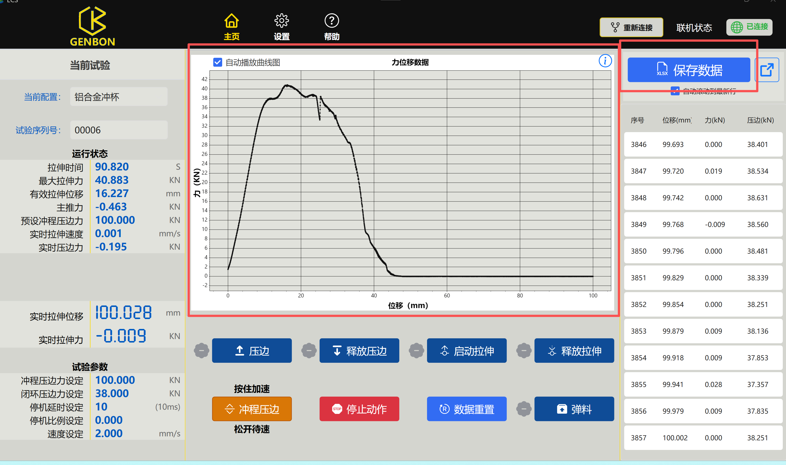
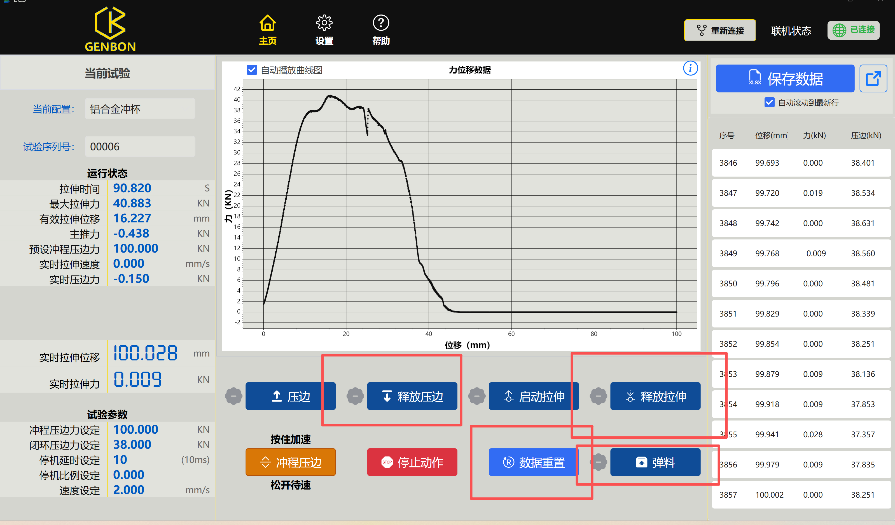

在如下界面中选择已有配置，或新建配置并填写试验参数。参数确认无误后，点击保存按钮保存当前配置。
开始试验前，请确认当前配置和试验序列号均已设置正确，避免后续保存数据时信息不完整。

在设置页的如下界面中，点击“开始传感器归零”按钮，开始校准力传感器。
需注意：请确保设备空载，且不处于试验进行中。

放置并固定待测板材。点击主页界面中的“压边”按钮后，夹具会缓慢上升，并按照设定的压边力夹住测试板材。
如需加快夹具上升过程，可按住“冲程压边”按钮；松开按钮后，夹具会恢复一般速度。
等待“实时压边力”和“闭环压边力”一致后，再进行下一步操作。

点击界面中的“启动拉伸”按钮，等待模具缓慢上升。
模具接触到板材后，“实时拉伸位移”和“实时拉伸力”的数值会开始变化。此时可通过界面中的实时数据和曲线图观察试验状态。

试验进行中以及试验停止后，都可以在曲线图上查看力和位移的数据变化曲线。
鼠标可以在曲线图上拖动视图，滚轮可用于放大或缩小。右键菜单中的“自动缩放”可还原到合适的显示比例。
点击“新窗口打开”可以全屏查看曲线图；点击“保存图片”可以将当前曲线图保存到本地；点击“复制到剪切板”可以将当前曲线图复制到剪切板。
右侧弹出按钮可查看试验过程中的所有原始数据。“保存数据”按钮可以将数据打包为 Excel 表格并保存到本地。

确认试验结束后，点击图中的“弹料”按钮，将冲压材料从上方弹出。
随后依次点击“释放拉伸”和“释放压边”，释放模具和板材。按住“冲程压边”按钮同样可以加速释放夹具的过程。
确认试验已经完成，并且数据已保存完毕后，点击“数据重置”清除当前数据，然后即可进行下一次试验。
